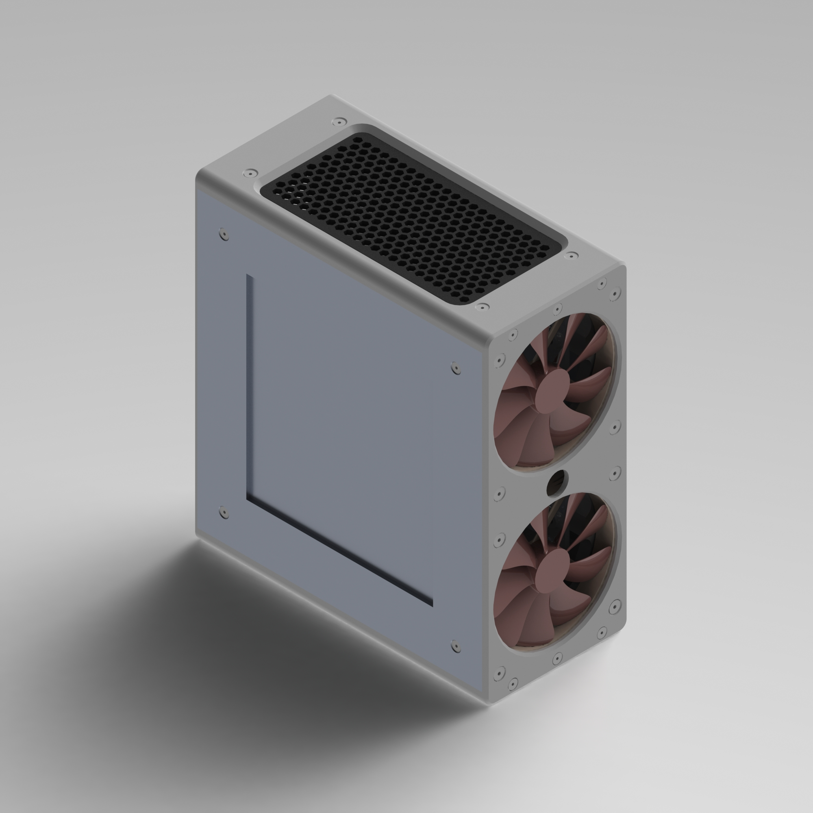

MITX PC Case
In April, I took apart an old 2013 iMac with a broken screen, hoping to repurpose it as a “headless” iMac in a custom housing. However, I came across a pretty major problem that meant I couldn’t do exactly what I wanted. Apple put a thermal sensor on the back of the display which, when removed, causes the SMC to think the processor is running at 240°C and thus downclock it and ramp up the fan to full speed in an attempt to save it. Even better is the fact that they decided to pass the data from the sensor through the LCD controller and to the motherboard through the display data cable (in earlier models, the temperature sensor had its own wire directly to the motherboard which could be plugged in even with the display removed). This made the computer so slow that even if I were able to make a suitable case for the motherboard and supporting components, it would be too slow to be worth it.
I decided the next best thing would be to take the usable components, build it into a small form factor case and either just run Windows/Linux on it or even make it into a Hackintosh and run macOS on it. So I took the CPU (i7-4771), the 32GB of SODIMM RAM and the wireless adapter and started to work on finding a suitable Micro-ITX (MITX) motherboard and case. Once I started looking at cases though, I found that the market of small form factor cases was dominated by small boutique vendors who sold beautiful CNC-milled anodized aluminum cases. This was good and all except for the fact that they’re generally fairly expensive and I was just looking for a fun, cheap project to do during quarantine.
The logical next step was to design my own case and build it myself! I went to SolidWorks and started designing a small form factor case to fit an MITX motherboard, an SSD and some Noctua fans to keep everything cool inside. My two main design goals were to use mostly 3D printed parts while also using mostly reusable fasteners (i.e. machine screws and threaded inserts) instead of permanent solutions like glue, or rivets if I were using metal. While these seemed nice at the beginning, it led to some interesting solutions in the CAD. Once I finished, there were way too many screws and spacer parts that could definitely have been avoided. Below you can see the inside of the case which seems simple enough, but there are lots of parts that aren't immediately obvious.
Though I never built the case, partly due to the complexity of it and partly due to lack of access to a 3D printer, I still think it was an interesting design exercise. I gained some insight into what goes into the process of designing a computer case and also a new appreciation for the small form factor case business. Possibly more importantly though, I saw that drastic impact that seemingly small design decisions can make on the end product and its feasibility to be produced in real life.
04/2020